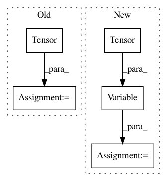

fc9e5824ad7bd3094f5012dc6fc3d2348481a2f4,implementations/bicyclegan/bicyclegan.py,,sample_images,#,112
Before Change
real_A = Variable(real_A.type(Tensor))
// Get interpolated noise [-1, 1]
sampled_z = np.repeat(np.linspace(-1, 1, 8)[:, np.newaxis], opt.latent_dim, 1)
sampled_z = Variable(Tensor(sampled_z))
// Generator samples
fake_B = generator(real_A, sampled_z)
// Concatenate samples horisontally
fake_B = torch.cat([x for x in fake_B.data.cpu()], -1)
After Change
real_A = img_A.view(1, *img_A.shape).repeat(opt.latent_dim, 1, 1, 1)
real_A = Variable(real_A.type(Tensor))
// Sample latent representations
sampled_z = Variable(Tensor(np.random.normal(0, 1, (opt.latent_dim, opt.latent_dim))))
// Generate samples
fake_B = generator(real_A, sampled_z)
// Concatenate samples horisontally
fake_B = torch.cat([x for x in fake_B.data.cpu()], -1)
In pattern: SUPERPATTERN
Frequency: 3
Non-data size: 5
Instances
Project Name: eriklindernoren/PyTorch-GAN
Commit Name: fc9e5824ad7bd3094f5012dc6fc3d2348481a2f4
Time: 2019-04-02
Author: eriklindernoren@live.se
File Name: implementations/bicyclegan/bicyclegan.py
Class Name:
Method Name: sample_images
Project Name: kevinzakka/recurrent-visual-attention
Commit Name: f3c5b75e59717c017fa3779b3f29b725e4ac6d9b
Time: 2018-01-24
Author: kevinarmandzakka@gmail.com
File Name: tests/test_retina.py
Class Name:
Method Name: main
Project Name: Zhaoyi-Yan/Shift-Net_pytorch
Commit Name: f90d49b9dbb6944693844d9bba22678420452596
Time: 2018-04-23
Author: 574819595@qq.com
File Name: models/InnerShiftTripleFunction.py
Class Name: InnerShiftTripleFunction
Method Name: backward